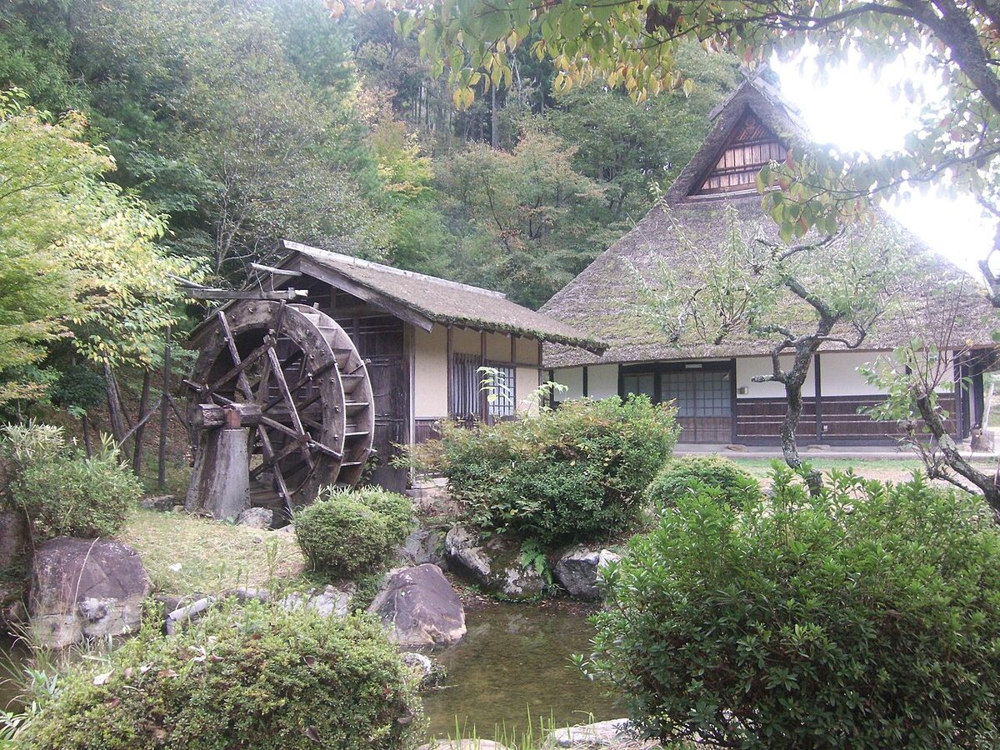
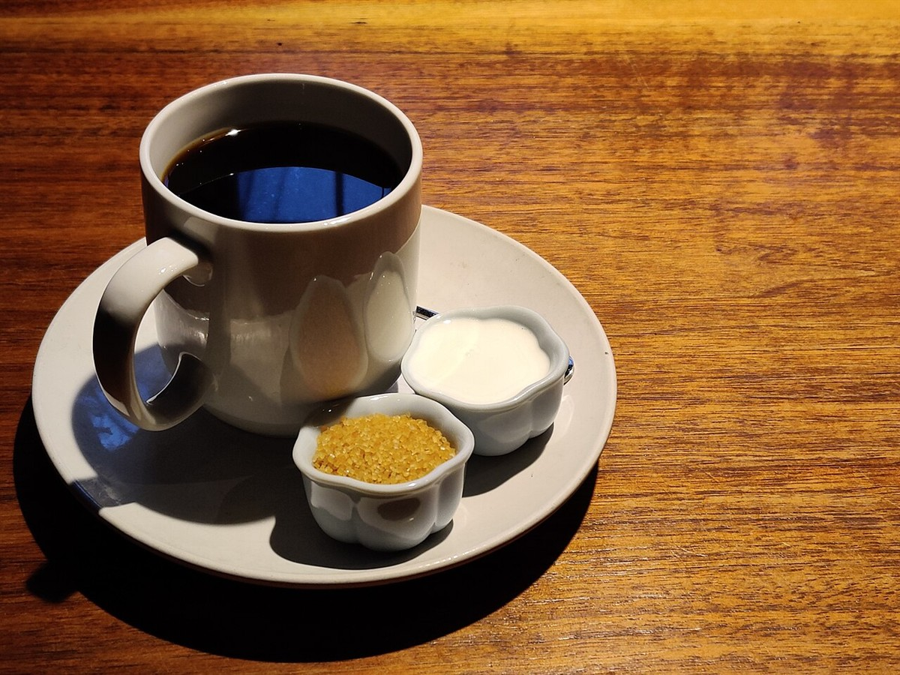

ABOUT
祖父母の家を、コーヒーを淹れる場所に
取材記事によると、お店は店主・橋本さんが生まれ育った祖父母の家を改装したもの。眉山のふもとにあり、1階の一室と玄関を店舗スペースにして、民家の趣を残しているそうです。
- 店主は徳島の焙煎卸の老舗で約13年、営業・配達や焙煎を経験し、2022年に独立してオープン。
- 長く裏方の仕事をしてきたからこそ、お客さんの目の前でコーヒーを淹れて、話をしながら楽しんでもらうスタイルを形にしたい、という想い。
- 店名は店主のニックネームに由来すると紹介されています。
- うんちくを押し付けない、肩肘張らない雰囲気。店主を囲むように椅子が並ぶ、と紹介されています。
上記は公開されている取材記事などに基づく内容です。記事で確認できなかったこと(ニックネームの由来など)は載せていません。

COFFEE
一杯ずつ、目の前で
焙煎したコーヒーを一杯ずつ丁寧に淹れて提供し、豆の販売もあると紹介されています。豆は中深煎りのブレンドと、浅煎りのシングルオリジンが中心で、浅煎りは液体の色も楽しめるようグラスで出されることがあるそうです。

浅煎りのコーヒー
甘い後味を残すよう仕上げた浅煎りのシングルオリジン、と紹介されています。産地は豆の入れ替わりで変わります。

中深煎りのブレンド
まろやかさの中にスパイスやハーブのような香りがあるブレンド、と紹介されています。

コーヒー豆
豆の販売もあると紹介されています。内容は日によって変わる場合があります。
価格・メニューの詳細・営業時間は 準備中(最新の情報はInstagramをご覧ください)。


VOICE
口コミ(イメージ例)
以下は制作側が作成したイメージ例で、実在のお客様の声ではありません。
イメージ例
民家のような入り口で少し緊張しましたが、目の前で淹れてもらううちに、自然と会話が始まりました。
ご来店のお客様
イメージ例
グラスで出てきた浅煎りが明るい色で、飲み終えたあともほんのり甘さが残りました。
ご来店のお客様
イメージ例
豆の説明を押し付けられることもなく、ゆっくり過ごせました。帰りに豆を買いました。
ご来店のお客様